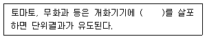
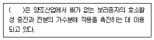
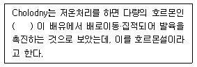

종자산업기사 (2015-08-16 기출문제)
1과목: 종자생산학 및 종자법규
1. 품종명칭 등록의 요건에 해당되는 것은?
- 1개의 고유한 품종명칭을 가질 경우
- 기호로만 표시된 경우
- 저명한 타인의 성명인 경우
- 상표명에 의하여 등록된 상표와 동일한 경우
(정답률: 91%)

2. 다음 중 자식성 작물의 특징에 해당되는 것은?
- 화기가 열리지 않는다
- 꽃가루와 수술머리의 성숙기가 다르다
- 장벽수정이 나타난다
- 이형예현상이 나타난다
(정답률: 59%)
3. 과실의 맛, 색깔과 같이 정핵이 직접 관여하지 않는 모체의 일부분에 꽃가루의 영향이 직접 나타나는 현상을 무엇이라 하는가?
- Xenia
- Metaxenia
- Pollination
- Fertilization
(정답률: 77%)
4. 대통령령으로 정하는 국재적인 종자검정기관에 해당하는 것은?
- USOV
- APSA
- ISTA
- WIPO
(정답률: 86%)
5. 다음 중 장일성 식물이 아닌 것은?
- 감자
- 무궁화
- 클로버
- 담배
(정답률: 75%)
6. 종자 춘화형 작물로만 짝지어진 것은?
- 배추, 양배추
- 양배추, 당근
- 양파, 당근
- 무, 배추
(정답률: 57%)
7. 종자검사 순도분석시 정립에 해당되는 것은?
- 떨어진 불인소화
- 콩과에서 분리된 자엽
- 원래 크기의 1/2보다 큰 종자 쇄립
- 원래크기의 절반 미만인 쇄립
(정답률: 86%)
8. 다음 중 과실 저장시 알맞은 온도와 습도는?
- 0~4도 ,85~90%
- 0~4도, 80%이하
- 5도 이상, 80~95%
- 12~15도, 80~95%
(정답률: 68%)
9. 종자의 자발적 휴면이 일어나는 원인으로 옳지 않은 것은?
- 배의 미숙
- 배의 휴면
- 종피의 경화
- ABA의 감소
(정답률: 79%)
10. 다음 중 무한화서에 속하는 것은?
- 단성성화
- 단집산화서
- 총상화서
- 복집산화서
(정답률: 69%)
11. 대부분 종자의 발아 시 공통적인 필수조건과 가장 거리가 먼 것은?
- 수분
- 온도
- 산소
- 광
(정답률: 67%)
12. 종자업자가 종자산업법에 의한 명령을 위반할 때 얼마간의 영업정지를 받을 수 있는가?
- 3개월 이내
- 6개월 이내
- 9개월 이내
- 12개월 이내
(정답률: 77%)
13. 품종보호 출원품종 심사요령에서 우선권 주장을 하고자 할 경우 최초의 품종보호출원일 다음 날부터 몇 년 이내에 출원하여야 우선권 주장을 할 수 있는가?
- 4년
- 3년
- 2년
- 1년
(정답률: 74%)
14. 국가품종목록의 등재대상이 아닌 것은?
- 벼
- 보리
- 밀
- 콩
(정답률: 80%)
15. 다음 중 종자의 휴면타파 법으로 옳지 않은 것은?
- 변온처리
- 농황산처리
- 지베렐린 처리
- 석회처리
(정답률: 70%)
16. 빛에 의해 발아가 촉진되는 작물은?
- 상추
- 파
- 가지
- 수박
(정답률: 86%)
17. 종자세의 검사방법으로 가장 옳지 않은 것은?
- 고온검사
- 전기전도율검사
- 노화촉진검사
- 테트라졸륨검사
(정답률: 57%)
18. 일반적으로 벼에서 수분 후 웅핵이 난핵과 결합하기까지 소요되는 시간은?
- 5시간
- 10시간
- 20시간
- 48시간
(정답률: 64%)
19. 다음 작물 중 연작의 해가 가장 적은 것은?
- 당근
- 수박
- 가지
- 고추
(정답률: 56%)
20. 종자의 안전 저장시 고려해야 할 요인과 거리가 가장 먼 것은?
- 저온
- 건조
- 밀폐
- 충분한 산소
(정답률: 82%)
2과목: 식물육종학
21. 식물체의 방사선감수성에 영향하는 요인이 아닌 것은?
- 처리종자량
- 종자의 수분함량
- 품종
- 세포내 산소농도
(정답률: 36%)
22. 동질배수체의 일반적인 특성으로 옳은 것은?
- 임성의 증대
- 종자 크기의 감소
- 생육지연
- 세포의 크기감소
(정답률: 71%)
23. 염색체의 수적 이상에 해당하는 것은?
- 역위
- 상호전좌
- 삼염색체성
- 결실
(정답률: 59%)
24. 염색체 배가의 가장효과적인 밥법은?
- Colchicine처리
- N-Mustard의 처리
- X-처리
- 방사선 동위원소 처리
(정답률: 88%)
25. 다음 동질 사배체는?
- AABB
- BBBB
- AAAABBBB
- ABCD
(정답률: 63%)
26. 기존의 우량품종의 단점을 교배를 통하여 단기간에 개선하는데 가장 적합한 육종방법은?
- 분리육종법
- 계통육종법
- 집단육종법
- 여교잡 육종법
(정답률: 77%)
27. 내병성 검정에 대한 설명중 옳은 것은?
- 진정저항성은 대체로 미동유전자의 작용에 의한다.
- 진정저항성은 병원균의 레이스에 따라 저항성정도가 변한다.
- 포장저항성은 병원균의 레이스에 따라 발병정도가 불연속성을 나타낸다.
- 포장저항성은 수직저항성이라고도 한다.
(정답률: 43%)
28. 포자체형 자가불화합성의 작용메커니즘을 옳게 설명한 것은?
- 2n의 암술과 2n의 수술과의 상호작용이다.
- 2n의 암술과 n의 화분과의 상호작용이다.
- n의 배낭과 2n의 수술과의 상호작용이다.
- n의 배낭과 n의 화분과의 상호작용이다.
(정답률: 44%)
29. 수정에 의해서 종자가 생기지 않았는데도 과실이 형성되는 현상은?
- 우수정
- 단위결과
- 영양생식
- 처녀생식
(정답률: 82%)
30. 돌연변이 육종에 관한 설명 중 옳지 않은 것은?
- 형질은 대부분 우성에서 열성으로 변화한다.
- 자연 돌연변이의 빈도는 높다.
- 돌연변이의 발생은 연속적이 아니라 이산적 이다.
- 주로 특정 형질의 개량을 위하여 행해져 왔다.
(정답률: 64%)
31. F1의배우자 비가 AB:Ab:aB:ab =1:4:4:1일 때 교차율은 얼마인가?
- 상반20%
- 상인20%
- 상반25%
- 상인25%
(정답률: 56%)
32. 종자의 배유에 화분친의 형질이 나타나는 현상은?
- 키메라 현상
- 연관 현상
- 키아즈마 현상
- 크세니아 현상
(정답률: 80%)
33. 다음 중 변이의 감별 방식 중 옳지 않은 것은?
- 유전변이와 환경변이 : 자식종자로 후대검정
- 유전자형의 동형접합성 여부 : 자식종자로 후대검정
- 질적변이와 양적변이 : 자식종자로 후대검정
- 표현형으로 구분하기 어려운 변이 : 특수 화경을 조성하여 감별
(정답률: 58%)
34. 하나의 화분모세포는 감수분열 후 몇 개의 소포자세포가 되는가?
- 1개
- 2개
- 3개
- 4개
(정답률: 81%)
35. 제2차적 특성에 관여하는 형질검정이 아닌 것은?
- 질적 및 양적형질
- 생육성형질
- 저항성형질
- 물질생산성형질
(정답률: 58%)
36. 다음 중 중복수정 시 배유를 형성하는 조합은?
- 정핵+반족세포
- 정핵 +2개의 조세포
- 정핵 +난핵
- 정핵 +2개의 극핵
(정답률: 79%)
37. 해외로부터 식물을 도입 시 격리하는 이유는?
- 농업적 특성을 조사하기 위해
- 급속한 증식을 위해
- 국내풍토에 순화시키기 위해
- 국내에 없는 병충해의 반입 여부를 검사하기 위해
(정답률: 91%)
38. 야생식물의 재배화에 의해 일어나는 유전적 변이가 아닌 것은?
- 종자탈립성 감소
- 단백질 함량의 증가
- 종자의 휴면성의 감소
- 이용부위의 증대 및 수량 증가
(정답률: 63%)
39. 교잡육종에서 교배친을 선정할 때 유의할 사항이 아닌 것은?
- 각 지방의 주요 품종을 선택하는 것이 좋다.
- 조합능력을 검정한다.
- 교배친품종의 특성을 철저히 조사한다.
- 타가수정을 주로 하는 품종을 교배친으로 삼는다.
(정답률: 56%)
40. 단교잡종에 대한 설명으로 옳은 것은?
- 발아력이 약하다.
- 품질의 균일도가 낮다.
- 잡종강세 발현이 약하다.
- F1종자 수량이 많다.
(정답률: 35%)
3과목: 재배원론
41. T/R율에 대한 설명으로 틀린 것은?
- 토양함수량이 감소하면 T/R율이 커진다.
- 질소를 다량 시용하면 T/R율이 커진다.
- 토양통기가 부량하면 T/R율이 증대된다.
- 감자나 고구마의 경우 파종기나 이식기가 늦어질수록 T/R율이 커진다.
(정답률: 66%)
42. 작물의 도복을 경감시키는 요인이 아닌 것은?
- 규소를 시용한다.
- 지베렐린을 처리한다.
- 칼륨을 시용한다.
- 인을 시용한다.
(정답률: 80%)
43. 논토양의 산화와 환원의 정도를 나타내는 기호는?
- Eμ
- E⊘
- Eh
- pF
(정답률: 76%)
44. 토양 속에서 미생물의 작용을 받아 생리적 중성을 나타내는 비료는?
- 황산암모니아
- 과인산석회
- 용성인비
- 칠레초석
(정답률: 60%)
45. 감자의 번식에 사용되는 종서에 해당하는 영양기관은?
- 비늘줄기
- 알뿌리
- 덩이뿌리
- 덩이줄기
(정답률: 93%)
46. 습해의 대책으로 옳은 것은?
- 이랑과 고랑의 높이를 동일하게 한다.
- 점토로 객토한다.
- 황산근 비료를 시용한다.
- 과산화석회를 종자에 분의하여 파종한다.
(정답률: 52%)
47. 상추 종자에 다음과 같은 순서로 650nm의 적색광(R)과 700~800nm의 근적외광(FR)을 조사하였을 때 발아율이 가장 높은 것은?
- (R+FR)+(R+FR)+(R+FR)+R
- (R+FR)+R+FR+R+FR
- FR+R+(FR+R)+FR+R+FR
- R+FR+(R+FR)+(R+FR)+R+FR+R+FR
(정답률: 67%)
48. 한가지 주 작물이 생육하고 있는 조간에 다른 작물을 재배하는 방법은?
- 혼작
- 간작
- 점혼작
- 교호작
(정답률: 72%)
49. 다음 중 ( ) 에 알맞은 것은?

- GA
- BNOA
- BA
- ABA
(정답률: 59%)
50. 5~7년 이상의 휴작이 필요한 작물로 구성된 것은?
- 고구마, 무
- 생강, 당근
- 호박, 담배
- 완두, 우엉
(정답률: 60%)
51. 다음 중 가지의 원인이 유독물질인 경우의 대책이 아닌 것은?
- 알코올 희석액을 흘려보낸다.
- 수산화칼륨 희석액을 흐려보낸다.
- 계면활성재 희석액을 흘려보낸다.
- 천근성 작물을 연작한다.
(정답률: 62%)
52. 인조 합성비료와 농약이 발달함에 따라 유리하다고 생각되는 작물을 자유로이 재배하는 방식은?
- 대전법
- 휴한농법
- 3포식 농법
- 자유경작
(정답률: 77%)
53. 작물의 생태적 특성에 의한 분류에 해당되지 않는 것은?
- 생존연한에 따른 분류
- 생존계절에 따른 분류
- 생육형에 따른 분류
- 식용가능에 따른 분류
(정답률: 82%)
54. 다음 중 타식성 작물이 아닌 것은?
- 참깨
- 딸기
- 시금치
- 호프
(정답률: 56%)
55. 다음 중 적산온도가 가장 높은 작물은?
- 메밀
- 조
- 아마
- 담배
(정답률: 57%)
56. 다음 중 ( )에 알맞은 호르몬은?

- 옥신
- 지베렐린
- 사이토키닌
- 에스렐
(정답률: 50%)
57. 사리풀을 재료로 하여 2년생 식물에서 버널리제이션의 이론을 세운 사람은?
- Gregory
- Melchers
- Purvis
- Allen
(정답률: 60%)
58. 다음 중 ( ) 에 알맞은 것은?

- bacteria chlorophyll a
- bacteria chlorophyll b
- carotenoid
- blastanin
(정답률: 54%)
59. 질산환원효소의 구성성분으로 질소대사에 필요하고, 콩과작물 뿌리혹박테리아의 질소고정에 필요한 무기성분은?
- 아연
- 망간
- 마그네슘
- 몰리브덴
(정답률: 77%)
60. 작물의 태양에너지 이용률은?(오류 신고가 접수된 문제입니다. 반드시 정답과 해설을 확인하시기 바랍니다.)
- 1~2%
- 3~4%
- 5~6%
- 7~9%
(정답률: 60%)
4과목: 식물보호학
61. 성충은 8월경에 콩꼬투리와 잎자루에 산란하고 부화한 유충은 콩꼬투리를 뚫고 들어가서 종실을 갉아먹으며, 연1회 발생하여 노숙유충으로 월동하는 해충은?
- 콩나방
- 콩풍뎅이
- 완두콩바구미
- 콩앞말이명나방
(정답률: 60%)
62. 광엽잡초와 작물이 경합하는 요소가 아닌 것은?
- 양분
- 수분
- 온도
- 햇빛
(정답률: 60%)
63. 분류상 고시류에 속하는 것은?
- 잠자리목
- 배잠자리목
- 풀잠자리목
- 날도래류목
(정답률: 61%)
64. 박테리오파지를 이용한 병원세균의 정량이 가능한 것은 어느 현상 때문인가?
- 삼투현상
- 용균현상
- 침투현상
- 항균현상
(정답률: 67%)
65. 입제의 조립법에 쓰이는 결합제의 원료는?
- 탈크
- 전분
- 소석회
- 탄산칼슘
(정답률: 63%)
66. 논에서 토양처리형 제초제는 토성에 따라 약해 발생정도가 다르다. 약해가 가장 발생하기 쉬운 토성은?
- 점질토
- 식양토
- 사양토
- 미사질양토
(정답률: 46%)
67. 페녹신계 제초제는?
- 2,4_D
- Dicamba
- Paraquat
- Simazine
(정답률: 75%)
68. 배나무의 잎에 기생하며 녹병포자와 녹포자를 차례로 형성하고, 녹포자는 바람에 날려서 주간기주인 향나무의 잎이나 가지를 침해하여 겨울포자 상태로 월동하는 것은?
- 더뎅이병균
- 근두암종병균
- 겹무늬썩음병균
- 붉은별무늬병균
(정답률: 74%)
69. 냉해로 인해 발생되는 식물의 생리 변화가 아닌 것은?
- 불임현상
- 양분 흡수 저해
- 원형질 유동 증가
- 암모니아 축적 증대
(정답률: 65%)
70. 잡초의 천이에 관여하는 요인으로 가장 거리가 먼 것은?
- 시비법
- 제초방법
- 물관리방법
- 살균제 처리방법
(정답률: 52%)
71. 접촉형 비피리딜리움계 비선택성 제초제는?
- Triclopyr
- Bentazon
- Paraquat
- Quinclorac
(정답률: 65%)
72. 우리나라 여름작물의 밭에서 나는 잡초로만 짝지어진 것은?
- 명아주, 강아지풀
- 쇠뜨기, 물달개비
- 토끼풀, 개구리밥
- 올방개, 참방동사니
(정답률: 80%)
73. 농약의 급성독성의 유형이 아닌 것은?
- 경구독성
- 잔류독성
- 흡입독성
- 경피독성
(정답률: 79%)
74. 작물을 씹어 먹어 피해를 발생시키는 해충으로 올바르게 짝지어진 것은?
- 매미충, 애멸구, 깍지벌레
- 잎말이나방, 풍댕이, 진딧물
- 짚시나방, 귤굴나방, 노린재
- 배추흰나비, 벼애나방, 풍뎅이
(정답률: 60%)
75. 식물의 줄기를 파고 들어가는 것은?
- 벼멸구
- 벼물바구미
- 오이잎벌레
- 사과하늘소
(정답률: 65%)
76. 식물병에 대한 설명으로 옳지 않은 것은?(오류 신고가 접수된 문제입니다. 반드시 정답과 해설을 확인하시기 바랍니다.)
- 환경
- 교잡
- 병원체
- 감수체
(정답률: 37%)
77. 채소무름병에 대한 설명으로 옳지 않는 것은?
- 식물의 조직을 연화 부패시키는 병이다.
- 배추는 잎과 잎자루에 발생하며 악취를 낸다.
- 감자에는 생육중에 고온 다습할 때 경엽에 발병한다.
- 병원균은 다양하지만 고온 다습할 때 경엽에 발병한다.
(정답률: 27%)
78. 다음 중 레이스의 정의로 옳은 것은?
- 바이러스에 적용되는 용어이다.
- 병원균이 다른개체군이 생기는 현상
- 기주의 품종에 따라 병원성이 다른 개체군
- 분류학적으로 같은 종에 속하지만 병원성이 다른 개체군 중에서 종이 다른 식물을 침해하는 것
(정답률: 60%)
79. 인삼 탄저병과 사과나무 탄저병의 발생에 공통적으로 영양을 미치는 요인은?
- 산소농도
- 직사광선
- 토양산도
- 재식간격
(정답률: 60%)
80. 작물 해충의 종합적관리(IPM)에 대한 설명으로 틀린 것은?
- 농약 사용을 배제하여 친환경 재배를 실시한다.
- 유기합성농약 만능주의에 대한 반성으로부터 시작하였다.
- 병해충의 밀도를 경제적 피해수준 이하로 유지하도록 하는 것이다.
- 자연제어의 기작을 가능한 한 효율적으로 이용하는 것이 기본이다.
(정답률: 64%)